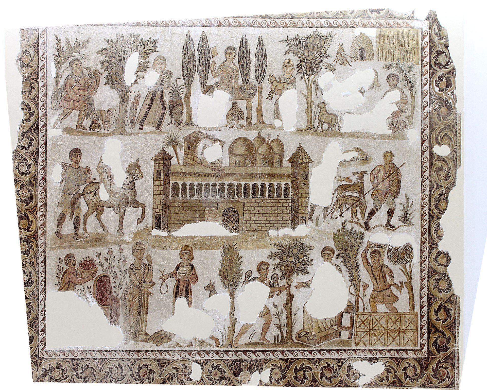
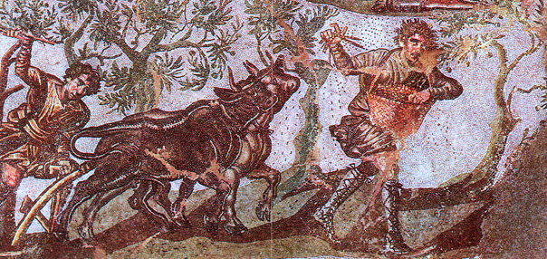
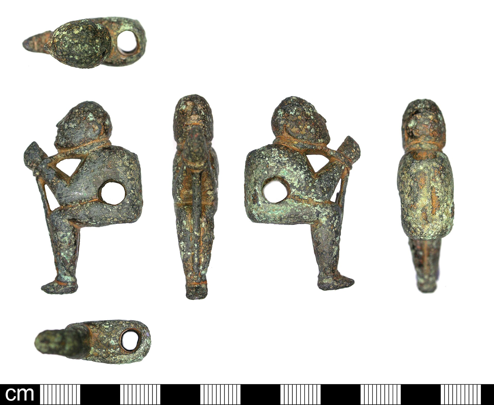
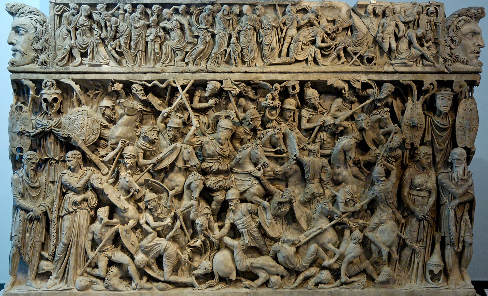
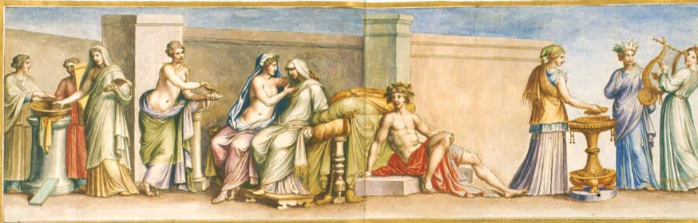
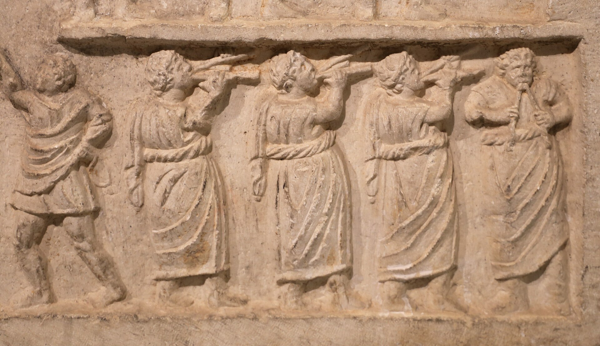

Kalasiris
Agricultural Slave · Sicily


You are property. You were born free, in a village on the southern coast of the Black Sea, to a family of subsistence farmers in the kingdom of Bithynia. At twelve, your village was raided during one of the dynastic wars between Bithynia and Pontus, and you were captured and sold to a slave trader at Nicomedia.

Enslavement and transport. From Nicomedia you were shipped to Delos, at this time the largest slave market in the Mediterranean — ancient sources claim it could process ten thousand slaves in a single day. You were sold to a Roman buyer, an agent for a wealthy equestrian named Publius Annius who owned a large latifundium (plantation estate) in eastern Sicily, near Enna. You were given the name Kalasiris, an Egyptian-style name fashionable for eastern slaves. Your birth name is lost.
Work. You worked grain fields. Sicily was Rome's first province and one of its primary breadbaskets. The latifundia of Sicily were notorious: large estates worked by enormous slave gangs under overseers (vilici), many of them slaves themselves. You slept in an ergastulum — a barracks, sometimes partially underground, sometimes chained at night. You ate grain porridge, olives, and rough wine. You were given one tunic per year and a rough cloak every two years. Your owner visited the estate perhaps once every three years; you saw him twice in your life.

The context of slave revolts. You arrived in Sicily roughly two decades after the First Servile War (135–132 BC), which had been centered around Enna — your very district. The memory of it hung over everything. Overseers were harsher because of it; security was tighter. Older slaves on the estate whispered about Eunus, the Syrian slave who had declared himself king and held Roman armies at bay for three years. When you were roughly twenty-seven, the Second Servile War erupted (104–100 BC), led by Salvius (who took the name Tryphon) and Athenion. You did not join the rebellion, not from loyalty but from fear and geography — the initial uprising centered in the west of the island, and by the time it reached your district, Roman legions under Manius Aquillius were already closing in. Two slaves from your estate who tried to flee were caught and crucified along the road to Enna. You watched.

Personal life. Legally, slaves could not marry, but the estate owner permitted informal unions (contubernia) because they produced new slaves. You partnered with a Gallic woman named Litavis around age twenty-five. She had two children: a boy who survived and a girl who died at birth. Both children were the property of Publius Annius. You had no legal standing as a parent. When Litavis fell ill with a persistent cough — likely tuberculosis — she was moved to a separate hut and died within two seasons. Your son was eventually transferred to another estate in Sardinia. You never saw him again and had no power to prevent it.

Death. You died around age forty-nine. The cause was most likely accumulated physical breakdown — the ancient sources and skeletal evidence from Roman-era slave burials show severe arthritis, spinal compression, and malnutrition as standard. You were buried in an unmarked grave in the estate's slave cemetery. No one recorded your death.
What shaped this life
The massive slave economy that powered Roman agriculture from the second century BC onward, the catastrophic Servile Wars, the Delos slave trade, and the legal non-personhood that defined roughly 15–25% of the Italian population during the late Republic.
- Slavery in ancient Rome
- ACOUP — Bread, Part II: Big Farms (the slave latifundia)
- Delos (the slave market)
- First Servile War
- Second Servile War
- Latifundium
- Kingdom of Bithynia
The images above are real museum artifacts and photographs, or commissioned illustrations; full attribution on the credits page.